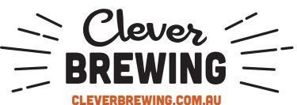
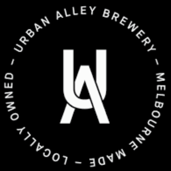
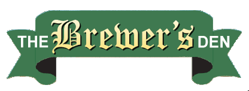

The Victorian
Amateur Brewing Championships (Vicbrew 2019) will be held on 14th & 15th
September 2019 at the Belgian Beer Café Eureka, 5 Riverside Quay, Southbank
Melbourne. Melways reference: 2F E7 .
Please note that VicBrew uses the AABC2019 categories and styles. 2019
Categories and Styles listing. New England IPA (NEIPA) is the only new inclusion
for 2019.
Placing (1st, 2nd or 3rd) in any category at Vicbrew 2019 qualifies entrant to submit an entry, in the same category, at AABC 2019 Sydney Australia on October 26th and 27th 2019.
Online Entries:
Online Entry Registration is available for Vicbrew 2019 From
July 1st via compmaster http://www.compmaster.com.au
Please follow the competition rules on the Compmaster page.
NOTE: Online entries will still need to be delivered to a Vicbrew 2019
collection centre by Early Saturday 31/08/2019
Entries may be submitted upto Saturday 31st August 2019 at the following collection points:
|
Champion Beer of Show
|
||
11. India Pale Ale Category Sponsor
|
Best Novice Brewer
|
4. Pale Ale Category Sponsor |
| 7. Brown Ale Category Sponsor |
Vicbrew 2019
Entry Collection Points |
5. American Pale Ale Category Sponsor http://bintani.com.au/ 
|
|
||
| 10. Strong Stout Category |
3. Amber & Dark Lager Category
Sponsor
|
12. Specialty IPA Category Sponsor |
18. Specialty Beer Category Sponsor
 |
16. Strong Ales and Lagers Category Sponsor  6. Bitter Ale Category Sponsor
|
|
13. Wheat and Rye Beer Category Sponsor
|
1. Low Alcohol Category Sponsor
|
14. Sour Ale Category Sponsor |
|
15. Belgian Ale Category Sponsor |
|
|
17. Fruit/Spice/Herb or Vegetable Beer Category Sponsor
|
||
NOTE: That for Vicbrew 2019 and AABC 2019 the update AABC 2019 Style Guidelines will be used.
Categories and Styles list for Vicbrew 2019
Comming soon:
AABC 2019 Styleguides in pdf format, one page per style, to be used at Vicbrew
2019.
AABC 2019 Styleguides in pdf
format, condensed version.
Beer Judging Form to be used at Vicbrew
2019
Mead Judging Form to be used at Vicbrew
2019
Cider Judging Form to be used at Vicbrew
2019
We hope to see you at Vicbrew 2019.